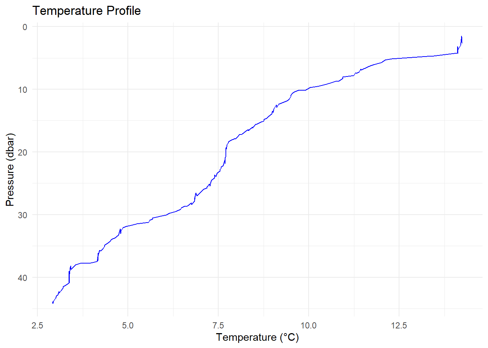
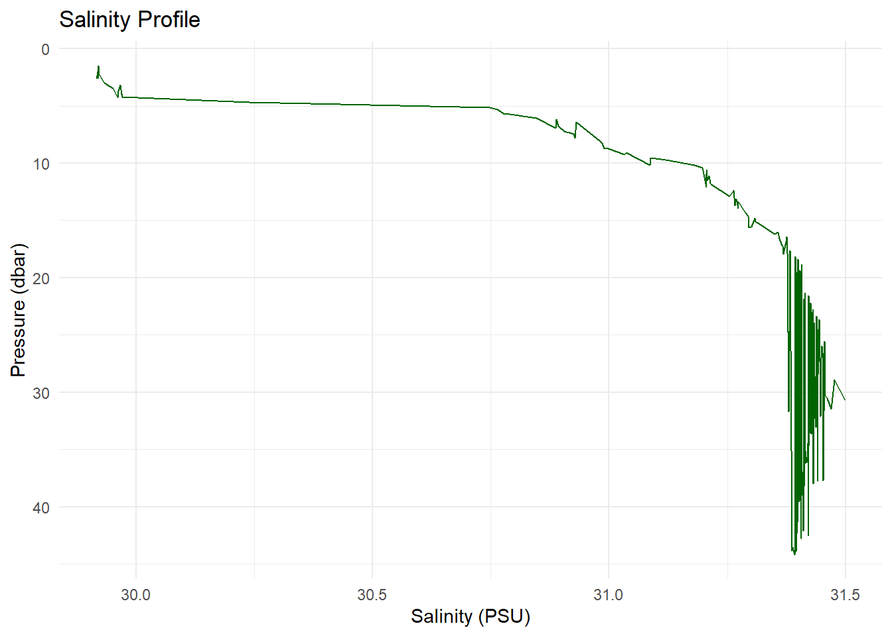
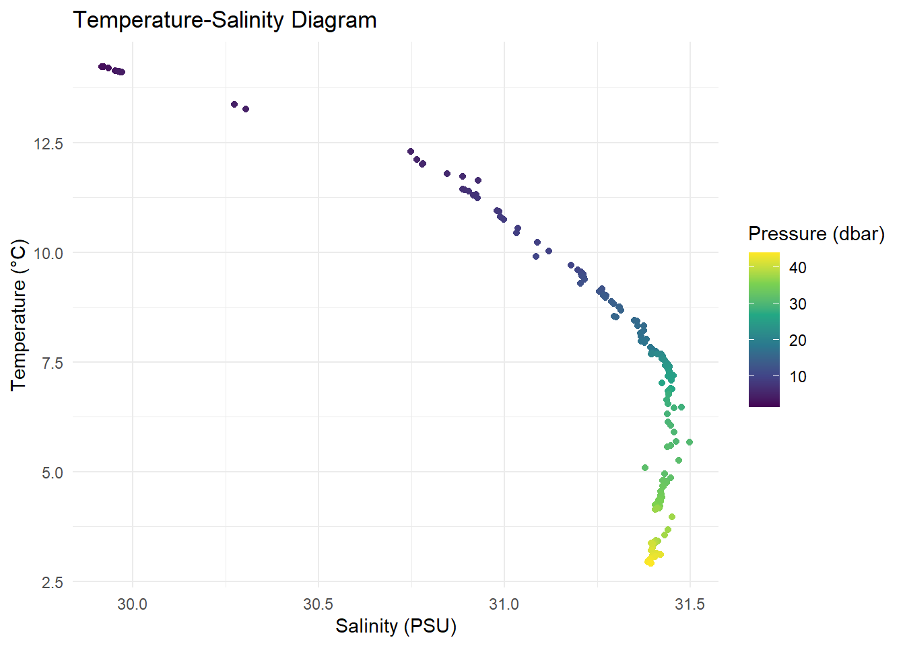
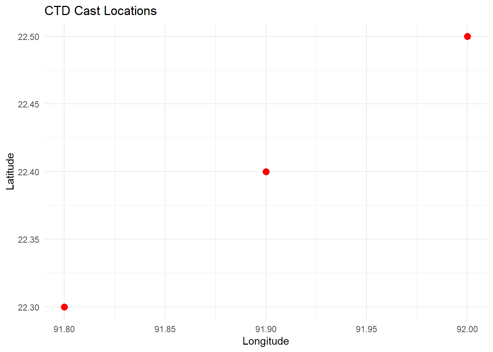
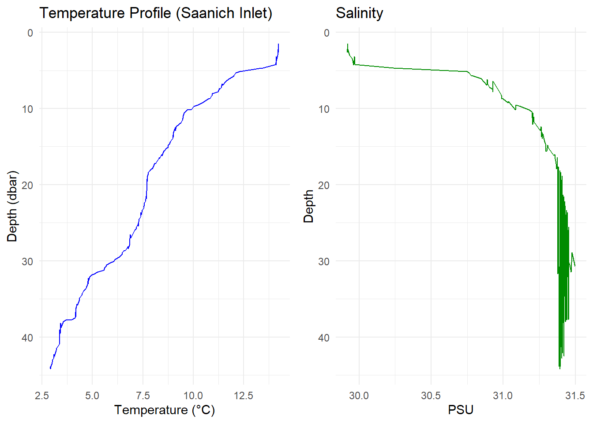

Warning: package 'oce' was built under R version 4.4.1Loading required package: gswWarning: package 'gsw' was built under R version 4.4.1April 20, 2025
oce and ggplot2
Oceanographic data, such as measurements from Conductivity-Temperature-Depth (CTD) instruments, are vital for understanding marine environments. In this post, we’ll explore how to use R’s oce package to handle such data and employ ggplot2 for insightful visualizations.
First, ensure that the necessary packages are installed and loaded:
The oce package comes with built-in datasets, including a sample CTD dataset. Let’s load and inspect it:
CTD Summary
-----------
* Instrument: SBE 25
* Temp. serial no.: 1140
* Cond. serial no.: 832
* File: "/Users/kelley/git/oce/create_data/ctd/ctd.cnv"
* Original file: c:\seasoft3\basin\bed0302.hex
* Start time: 2003-10-15 15:38:38
* Sample interval: 1 s
* Cruise: Halifax Harbour
* Vessel: Divcom3
* Station: Stn 2
* Mean Location: 44.684N 63.644W
* Data Overview
Min. Mean Max. Dim. NAs OriginalName
scan 130 220 310 181 0 scan
timeS [s] 129 219 309 181 0 timeS
pressure [dbar] 1.48 22.885 44.141 181 0 pr
depth [m] 1.468 22.698 43.778 181 0 depS
temperature [°C, IPTS-68] 2.919 7.5063 14.237 181 0 t068
salinity [PSS-78] 29.916 31.219 31.498 181 0 sal00
flag 0 0 0 181 0 flag
* Processing Log
- 2018-11-14 20:03:47 UTC: `create 'ctd' object`
- 2018-11-14 20:03:47 UTC: `read.ctd.sbe(file = file, debug = 10, processingLog = processingLog)`
- 2018-11-14 20:03:47 UTC: `oce.edit(x = ctd, item = "startTime", value = as.POSIXct(gsub("1903", "2003", format(ctd[["startTime"]])), tz = "UTC") + 4 * 3600, reason = "file had year=1903, instead of 2003", person = "Dan Kelley")`This dataset contains measurements like salinity, temperature, and pressure collected at various depths.
To understand the structure of the CTD data, we can extract specific parameters:
# Extract salinity, temperature, and pressure
salinity <- ctd[["salinity"]]
temperature <- ctd[["temperature"]]
pressure <- ctd[["pressure"]]ggplot2
While oce provides its own plotting functions, integrating with ggplot2 offers enhanced customization. To use ggplot2, we’ll convert the CTD object into a data frame:
# Convert CTD object to a data frame
ctd_df <- as.data.frame(ctd[["data"]])Let’s plot temperature against depth:
ggplot(ctd_df, aes(x = temperature, y = pressure)) +
geom_line(color = "blue") +
scale_y_reverse() + # Depth increases with pressure
labs(title = "Temperature Profile",
x = "Temperature (°C)",
y = "Pressure (dbar)") +
theme_minimal()
Similarly, plot salinity against depth:
ggplot(ctd_df, aes(x = salinity, y = pressure)) +
geom_line(color = "darkgreen") +
scale_y_reverse() +
labs(title = "Salinity Profile",
x = "Salinity (PSU)",
y = "Pressure (dbar)") +
theme_minimal()
A Temperature-Salinity (T-S) diagram is essential in oceanography:
ggplot(ctd_df, aes(x = salinity, y = temperature, color = pressure)) +
geom_point() +
#geom_line() + # uncomment the line and run again to see what happen
scale_color_viridis_c() +
labs(title = "Temperature-Salinity Diagram",
x = "Salinity (PSU)",
y = "Temperature (°C)",
color = "Pressure (dbar)") +
theme_minimal()
The oce package allows computation of derived oceanographic parameters. For instance, potential temperature:
# Extract salinity, temperature, and pressure from the CTD object
salinity <- ctd[["salinity"]]
temperature <- ctd[["temperature"]]
pressure <- ctd[["pressure"]]
# Calculate potential temperature referenced to the surface (0 dbar)
theta <- swTheta(salinity, temperature, pressure, referencePressure = 0)
# Add the calculated potential temperature to the CTD object
ctd <- oceSetData(ctd, name = "theta", value = theta)
# Now you can access the potential temperature from the CTD object
ctd[["theta"]] [1] 14.220882 14.226254 14.224802 14.221876 14.226322 14.232814 14.191678
[8] 14.111872 14.139226 14.118798 14.105862 14.099138 14.115020 13.265492
[15] 13.373063 12.293302 12.109435 12.015314 12.010110 11.791130 11.733629
[22] 11.629529 11.423749 11.439422 11.385709 11.291219 11.308103 11.236779
[29] 10.937640 10.933413 10.811601 10.738723 10.541845 10.440554 10.228687
[36] 10.030628 9.896224 9.697580 9.599891 9.548287 9.501067 9.500346
[43] 9.459820 9.421607 9.388003 9.285917 9.158529 9.100833 9.109286
[50] 9.024195 9.015174 8.985669 9.008138 8.964133 8.875720 8.824609
[57] 8.753615 8.747993 8.678003 8.525725 8.537811 8.432310 8.441089
[64] 8.316310 8.321895 8.209508 8.146105 8.073727 8.012709 7.942613
[71] 7.968199 7.837025 7.775626 7.767216 7.732703 7.712471 7.701367
[78] 7.715844 7.701027 7.699706 7.699588 7.692334 7.684333 7.678513
[85] 7.682289 7.682671 7.681346 7.626632 7.575341 7.572024 7.542015
[92] 7.541194 7.464395 7.395298 7.421262 7.387958 7.342857 7.303860
[99] 7.279137 7.254930 7.262893 7.180320 7.177105 7.080331 7.017626
[106] 6.872869 6.896322 6.851734 6.842622 6.848199 6.841278 6.750795
[113] 6.752865 6.638302 6.545537 6.467856 6.450345 6.315282 6.132942
[120] 6.048359 5.895220 5.680801 5.672788 5.591516 5.564404 5.249339
[127] 5.092104 4.950961 4.857090 4.784814 4.798983 4.793660 4.745377
[134] 4.735672 4.676583 4.650886 4.546121 4.490427 4.453034 4.415240
[141] 4.347563 4.344150 4.314646 4.214080 4.245056 4.169873 4.176963
[148] 4.170548 4.159642 4.157528 4.163300 4.135806 3.972377 3.675338
[155] 3.552991 3.419655 3.402448 3.423120 3.370433 3.364525 3.379803
[162] 3.377899 3.370783 3.371577 3.365853 3.366042 3.374026 3.354032
[169] 3.263465 3.205088 3.197776 3.144588 3.090510 3.101591 3.061100
[176] 3.016517 2.999009 2.968614 2.933620 2.915924 2.916311If you have multiple CTD casts with geographic coordinates, you can map their locations. Assuming you have a data frame ctd_locations with longitude and latitude:
# Sample data frame of CTD locations
ctd_locations <- data.frame(
longitude = c(91.8, 91.9, 92.0),
latitude = c(22.3, 22.4, 22.5)
)
# Plot locations
ggplot(ctd_locations, aes(x = longitude, y = latitude)) +
geom_point(color = "red", size = 3) +
labs(title = "CTD Cast Locations",
x = "Longitude",
y = "Latitude") +
theme_minimal()
🧠 Bonus: Create a Combined Profile Plot
library(gridExtra)
p1 <- ggplot(ctd_df, aes(x = temperature, y = pressure)) +
geom_line(color = "blue") +
scale_y_reverse() +
labs(
title = "Temperature Profile (Saanich Inlet)",
x = "Temperature (°C)",
y = "Depth (dbar)"
) +
theme_minimal()
p2 <- ggplot(ctd_df, aes(x = salinity, y = pressure)) +
geom_line(color = "green4") +
scale_y_reverse() +
labs(title = "Salinity", x = "PSU", y = "Depth") +
theme_minimal()
gridExtra::grid.arrange(p1, p2, ncol = 2)
---
title: "Visualizing Oceanographic Data with R: A Dive into oce and ggplot2"
date: "2025-04-20"
categories: [R, Oceanography, Data Analysis, Data Visualization]
image: ocean_data_analysis.png
editor_options:
chunk_output_type: inline
format:
html:
theme:
light: flatly
dark: [flatly, darkly]
code-link: true
code-fold: show
code-tools: true
toc: true
---
# 🌊 Visualizing Oceanographic Data with R: A Dive into `oce` and `ggplot2`
Oceanographic data, such as measurements from Conductivity-Temperature-Depth (CTD) instruments, are vital for understanding marine environments. In this post, we'll explore how to use R's `oce` package to handle such data and employ `ggplot2` for insightful visualizations.
## 📦 Getting Started
First, ensure that the necessary packages are installed and loaded:
```{r}
# Load the libraries
library(oce)
library(ggplot2)
```
## 📥 Loading Sample CTD Data
The `oce` package comes with built-in datasets, including a sample CTD dataset. Let's load and inspect it:
```{r}
# Load the sample CTD dataset
data(ctd)
# View a summary of the dataset
summary(ctd)
```
This dataset contains measurements like salinity, temperature, and pressure collected at various depths.
## 🔍 Exploring the Data
To understand the structure of the CTD data, we can extract specific parameters:
```{r}
# Extract salinity, temperature, and pressure
salinity <- ctd[["salinity"]]
temperature <- ctd[["temperature"]]
pressure <- ctd[["pressure"]]
```
## 📊 Visualizing with `ggplot2`
While `oce` provides its own plotting functions, integrating with `ggplot2` offers enhanced customization. To use `ggplot2`, we'll convert the CTD object into a data frame:
```{r}
# Convert CTD object to a data frame
ctd_df <- as.data.frame(ctd[["data"]])
```
### 🌡️ Temperature vs. Depth
Let's plot temperature against depth:
```{r}
ggplot(ctd_df, aes(x = temperature, y = pressure)) +
geom_line(color = "blue") +
scale_y_reverse() + # Depth increases with pressure
labs(title = "Temperature Profile",
x = "Temperature (°C)",
y = "Pressure (dbar)") +
theme_minimal()
```
### 🧂 Salinity vs. Depth
Similarly, plot salinity against depth:
```{r}
ggplot(ctd_df, aes(x = salinity, y = pressure)) +
geom_line(color = "darkgreen") +
scale_y_reverse() +
labs(title = "Salinity Profile",
x = "Salinity (PSU)",
y = "Pressure (dbar)") +
theme_minimal()
```
### 🔁 Temperature-Salinity Diagram
A Temperature-Salinity (T-S) diagram is essential in oceanography:
```{r}
ggplot(ctd_df, aes(x = salinity, y = temperature, color = pressure)) +
geom_point() +
#geom_line() + # uncomment the line and run again to see what happen
scale_color_viridis_c() +
labs(title = "Temperature-Salinity Diagram",
x = "Salinity (PSU)",
y = "Temperature (°C)",
color = "Pressure (dbar)") +
theme_minimal()
```
## 🧪 Calculating Derived Parameters
The `oce` package allows computation of derived oceanographic parameters. For instance, potential temperature:
```{r}
# Extract salinity, temperature, and pressure from the CTD object
salinity <- ctd[["salinity"]]
temperature <- ctd[["temperature"]]
pressure <- ctd[["pressure"]]
# Calculate potential temperature referenced to the surface (0 dbar)
theta <- swTheta(salinity, temperature, pressure, referencePressure = 0)
# Add the calculated potential temperature to the CTD object
ctd <- oceSetData(ctd, name = "theta", value = theta)
# Now you can access the potential temperature from the CTD object
ctd[["theta"]]
```
## 🗺️ Mapping CTD Cast Locations
If you have multiple CTD casts with geographic coordinates, you can map their locations. Assuming you have a data frame `ctd_locations` with `longitude` and `latitude`:
```{r}
# Sample data frame of CTD locations
ctd_locations <- data.frame(
longitude = c(91.8, 91.9, 92.0),
latitude = c(22.3, 22.4, 22.5)
)
# Plot locations
ggplot(ctd_locations, aes(x = longitude, y = latitude)) +
geom_point(color = "red", size = 3) +
labs(title = "CTD Cast Locations",
x = "Longitude",
y = "Latitude") +
theme_minimal()
```
🧠 Bonus: Create a Combined Profile Plot
```{r}
library(gridExtra)
p1 <- ggplot(ctd_df, aes(x = temperature, y = pressure)) +
geom_line(color = "blue") +
scale_y_reverse() +
labs(
title = "Temperature Profile (Saanich Inlet)",
x = "Temperature (°C)",
y = "Depth (dbar)"
) +
theme_minimal()
p2 <- ggplot(ctd_df, aes(x = salinity, y = pressure)) +
geom_line(color = "green4") +
scale_y_reverse() +
labs(title = "Salinity", x = "PSU", y = "Depth") +
theme_minimal()
gridExtra::grid.arrange(p1, p2, ncol = 2)
```